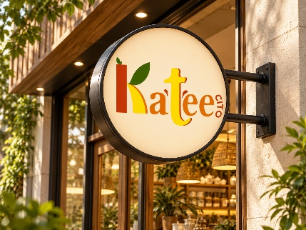

01
Estandarización de la marca
01
Elaboración de un manual de identidad corporativa.
02
Uso correcto del logotipo en diferentes aplicaciones.
03
Fortalecimiento del reconocimiento de marca.
Ideas para fortalecer la experiencia del cliente, la comunicación y la presencia de la marca.

Cada propuesta se presenta por separado para facilitar su lectura y aplicación.
Elaboración de un manual de identidad corporativa.
Uso correcto del logotipo en diferentes aplicaciones.
Fortalecimiento del reconocimiento de marca.
Diseño de afiches, volantes y banners.
Creación de empaques atractivos para el té en polvo.
Elaboración de material promocional para puntos de venta.
Estandarización de la paleta cromática corporativa.
Selección de tipografías legibles y coherentes.
Aplicación uniforme de los elementos gráficos.
Creación de plantillas para publicaciones digitales.
Desarrollo de contenido visual sobre los productos cítricos.
Fortalecimiento de la presencia digital de Kateecito.